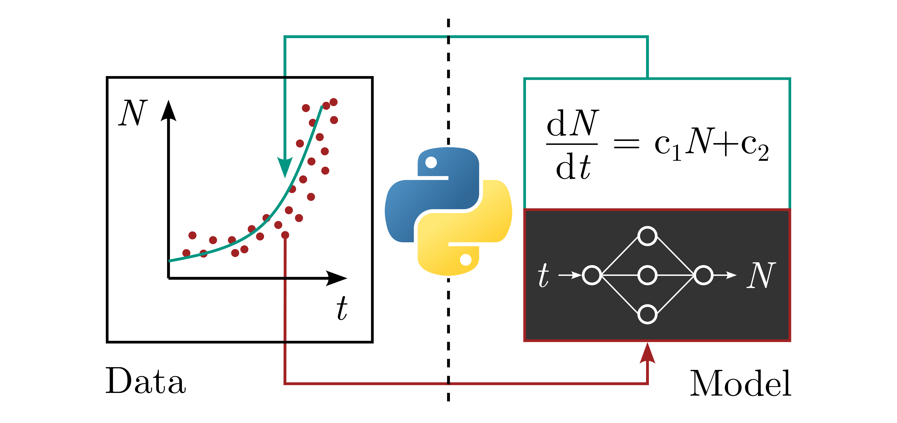

Data Driven Modeling in Python
Authors: Frank Rhein (frank.rhein@kit.edu), Marvin Winkler (marvin.winkler2@kit.edu).Group: Particle Dynamics in Heterogeneous Systems
Affiliation: Karlsruhe Institute of Technology (KIT), Institute of Mechanical Process Engineering and Mechanics
Web (KIT): Link
